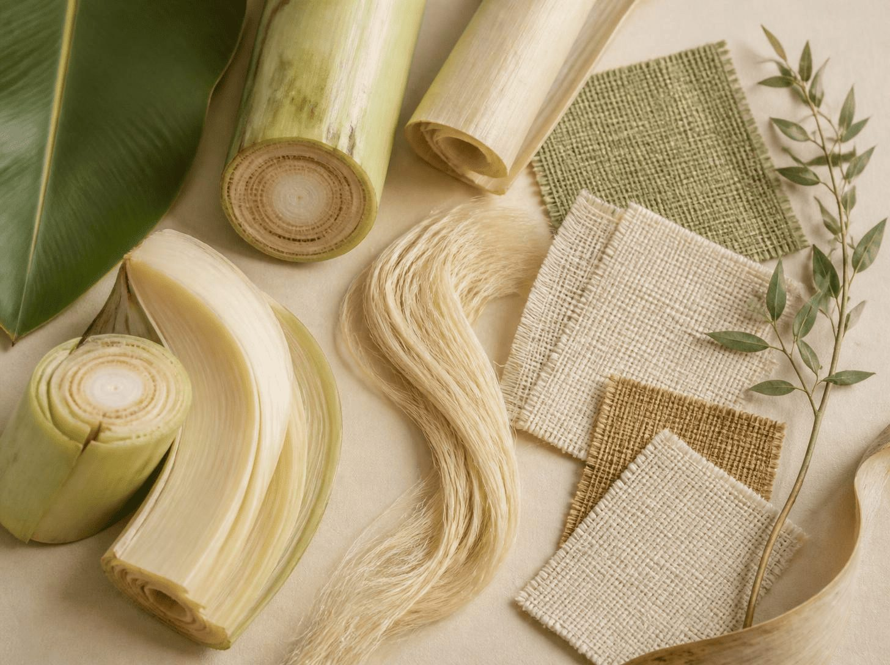

Sustainable banana fibre manufacturer · Maharashtra, India
Transforming Banana Plant Waste Into Sustainable Fibre.
At Ecostalk Fibre Pvt. Ltd., we turn the potential of banana plant residues into valuable natural fibre, supporting sustainable manufacturing and a more circular economy.

Who we are
A natural fibre company built on agricultural residue.
Ecostalk Fibre Pvt. Ltd. is a banana fibre manufacturer based at Kinhi MIDC, Bhusawal in Jalgaon, Maharashtra. We focus on converting banana plant agricultural waste into useful, sustainable fibre.
After the fruit is harvested, the banana plant's pseudostem is typically left as residue. We see value in that residue: a renewable raw material for natural fibre solutions for domestic and international customers.

Sustainability
From agricultural waste to a renewable material.
Turning crop residue into fibre is one practical way to add value to what would otherwise be left unused.
Agricultural waste valorization
Banana plant residue becomes a raw material instead of a disposal problem.
Renewable natural fibre
Natural fibre from a plant source is an eco-friendly alternative to conventional materials.
Circular economy thinking
Reducing agricultural waste and promoting renewable resources are central to our mission.
From stem to fibre
Our manufacturing process at a glance.
Banana plant residue sourcing
Banana plant residue left after the fruit harvest is identified and sourced.
Selection & preparation
Suitable plant material is selected and prepared for fibre extraction.
Fibre extraction
Fibre is separated from the prepared plant material.
Cleaning & processing
The extracted fibre is cleaned and processed into a usable form.
Drying & quality inspection
Fibre is dried and inspected before it is packed.
Packaging & dispatch
Finished fibre is packed and prepared for delivery to customers.
Products
Banana fibre for natural fibre solutions.
Explore our banana fibre offering. Tell us your requirement and our team will respond with the details available.
- Raw banana fibreBanana fibre in its extracted form. Learn more
- Processed banana fibreBanana fibre cleaned and processed for use. Learn more
- Other grades & formatsOther fibre grades or formats on request. Learn more
Infrastructure
Plant & machinery.
A look at Ecostalk and the banana fibre we work with.
Our mission
Harnessing the potential of banana plants.
At Ecostalk Fibre Pvt. Ltd., our mission is to harness the potential of banana plants by converting agricultural waste into high-quality, sustainable banana fibre.
Our vision
A greener future, from agricultural waste.
To become a globally recognized leader in sustainable banana fibre manufacturing by transforming agricultural waste into valuable, eco-friendly products and creating a greener, more sustainable future for generations to come.
Business enquiries